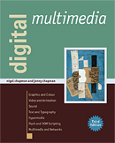

See the book at amazon.co.uk or amazon.com
Related Books

See Digital Multimedia at amazon.co.uk or amazon.com

See Web Design: A Complete Introduction at amazon.co.uk or amazon.com
The authors are not responsible for the content of any external sites linked to from digitalmediatools.org
All material on this site is ©2007–2010 MacAvon Media and may not be reproduced without permission.
Illustrator Teaching Notes
Vector drawing applications are not intuitive to anybody coming to them for the first time. Both technical drawing and art in traditional media work by making marks with a drawing or painting implement, with the mark following the movement, whether or not this is constrained by drawing instruments. Vector drawing requires everybody to rethink what it means to draw something. This will be the single greatest difficulty facing all students, if they have never used a similar program before.
In the book we draw the distinction between freehand drawing in Illustrator and what we refer to as technical drawing – using the shape tools and so on. Unless your students are artists who can draw, it will probably be better to start with the shape tools, as we do in the text. Otherwise, you are asking them to master an unfamiliar set of tools at the same time as performing a task (drawing) that they may find difficult. In art and design departments, though, go straight to the pencil and brush tools and let the students work in a way that uses the skills and talents they already possess. (You may find that artists find it harder than anyone else to use the technical drawing tools, such as the pen, because they are so used to drawing in a different way.)
Illustrator is actually a relatively simple program, and once the basic concepts of vector drawing have been grasped, the more advanced features should come easily. You will need to refer to Chapter 8 early on, since you can't do much without choosing a colour, and Bézier curves are fundamental to drawing.
Illustrator is a simple but powerful tool for creating short animation sequences, by placing frames on separate layers, so animation students should be encouraged to explore it for vector animation in preference to Flash. (But if tweening is needed, Flash must be used.)
Don't forget that Illustrator can export finished work in various bitmapped formats. The end product need not be in vector form, even if vector tools are used to create it.
Use your own judgment about whether to teach the new colour features, which we describe near the end of the chapter. Art and design students should be able to choose colours by eye, and we have reservations about the colour theory that underlies Live Color. Adobe have placed a lot of emphasis on this feature, though, and it seems likely that something similar will appear in the next versions of some of the other media tools, so students should probably be introduced to it, while still being encouraged to use their own judgement in preference to rules.